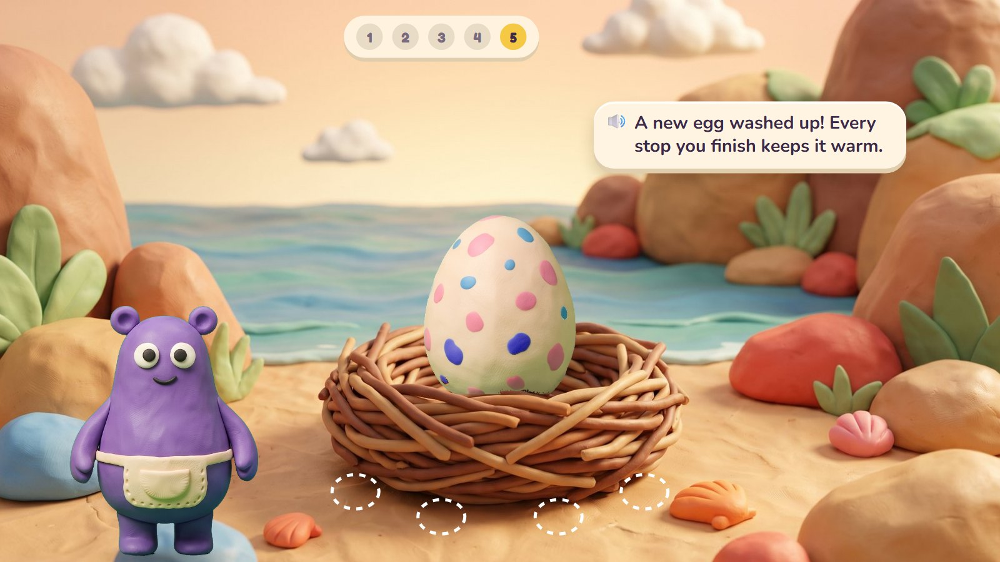
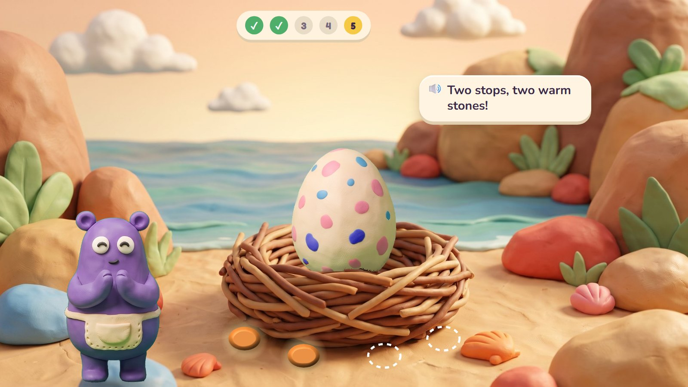
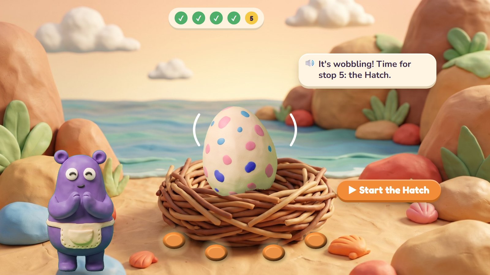
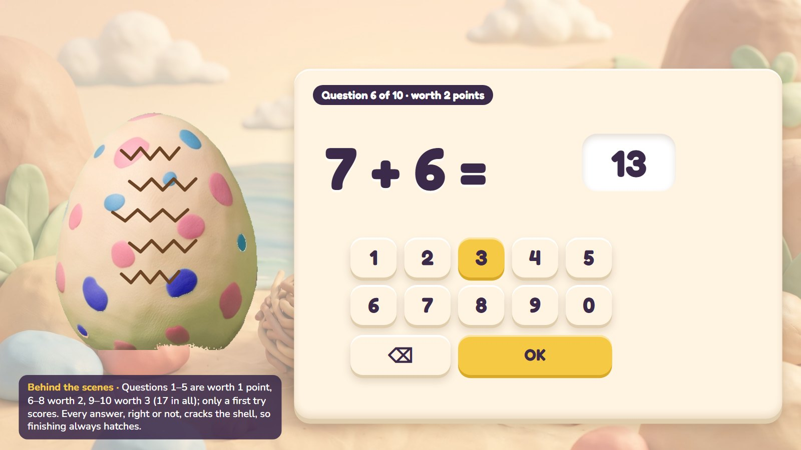
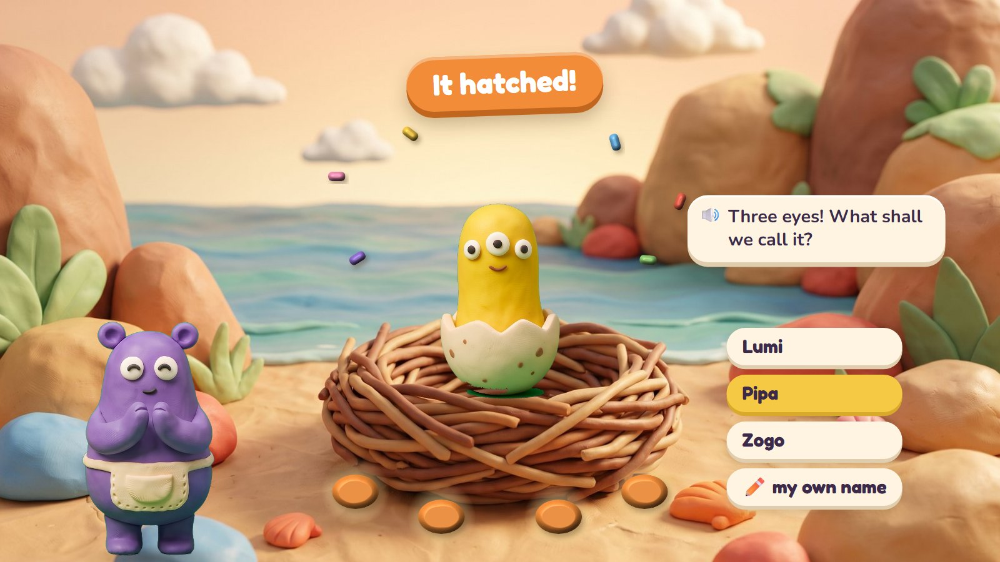
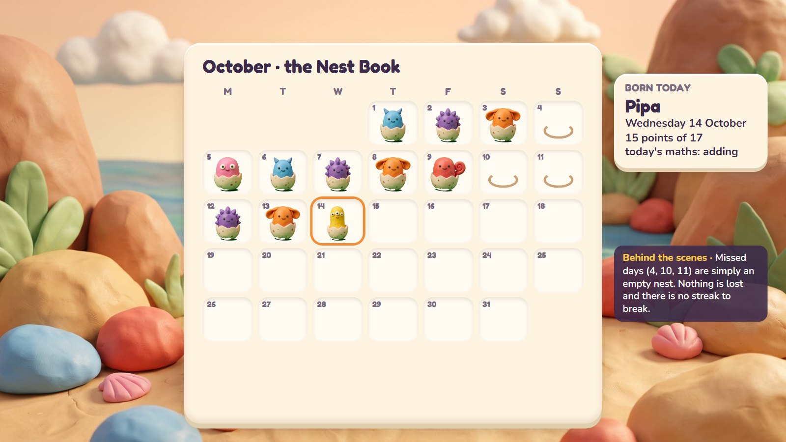

A day in Clay Bay
Every morning a new clay egg is waiting in the nest. Each stop of today's road warms it, and the last stop, the Hatch, is the day's challenge: ten questions, and with every answer the shell cracks a little more. After the tenth, the egg hatches into a baby critter, whatever the score. The child names it and it moves into the bay. Over a month the Nest Book fills with thirty different critters.
One day, six moments

1A new egg
Morning. A speckled clay egg waits in the nest. Four empty spots beside it are for warm stones; the strip at the top shows today's five stops.
🔊 A new egg washed up! Every stop you finish keeps it warm.
One road a day: warm-up, review, new, practise, and the Hatch.

2Warm stones
Two stops done: two warm stones glow beside the nest.
🔊 Two stops, two warm stones!
The stones show how far the day has come, without numbers or scores.

3It wobbles
Four stops done, four stones: the egg wobbles. Stop 5 is the Hatch.
🔊 It's wobbling! Time for stop 5: the Hatch.
The child can stop any time and come back later; finished stops stay done.

4The Hatch
Ten questions from what the child has learned, easier to harder. Every answer cracks the shell a little.
Questions 1–5 are worth 1 point, 6–8 worth 2, 9–10 worth 3: 17 in all. Two tries, but only a first try scores. Ages 3–5 can do it in two halves of five.

5It hatched!
After the tenth answer the egg hatches into a baby critter, whatever the score. The child picks a name, or types one.
🔊 Three eyes! What shall we call it?
Its looks come partly from the day's maths: three eyes on a counting-to-three day, stripes in halves on a fractions day.

6The Nest Book
Every day's hatchling goes into the month's Nest Book and moves into the bay. A missed day is just an empty nest.
Each hatchling has a card: its name, the date, the points and the day's maths. Nothing is lost and there is no streak to break.
Five stops, about ten minutes

| Stop | What happens |
|---|---|
| 1 · Warm-up | Roll-a-Giant: a speed round with facts the child already knows. Ages 3–4 get Peek-a-Peep, a quick look. It can be skipped. |
| 2 · Review | A skill that is due again, in one of the activities (five rounds, about two minutes). |
| 3 · New | The next step of today's skill: learn, then try. At most one new skill a day. |
| 4 · Practise | The same skill again, in another activity. |
| 5 · The Hatch | Ten questions from what the child has learned; the egg hatches at the end. |
| Age | Warm-up | Each activity | The Hatch | The day |
|---|---|---|---|---|
| 3–4 | Peek-a-Peep, 1 min | 1.5 min | two halves of five, 1.5 min each | about 9 min |
| 5–7 | 10 facts, no clock | 2 min | 10 questions, 4 min (age 5: two halves) | about 11 min |
| 8–10 | 60 seconds (timer can be hidden) | 2–2.5 min | 10 questions, 5 min | about 12 min |
These are guesses to check with children, not deadlines. The stops go in order, but the child can stop any time; a half-done question waits exactly as it was.
The rules
🥚 Always hatches
Finishing the ten questions always hatches the egg, whatever the score. Points (17 at most) go on the hatchling's card, so a parent can see them, but they never make the critter better or worse.
🧮 What is asked
Only things the child has learned, easier to harder: questions 1–5 are worth 1 point, 6–8 worth 2, 9–10 worth 3. Two tries; only the first try scores. A word problem is always among the last three.
🎨 Every one different
Six body shapes, eight colours and markings that come from the day's maths (three eyes, stripes in halves, triangle spots) give hundreds of different hatchlings. The markings are drawn by code on the body.
📅 No streaks
A missed day is an empty nest in the Nest Book. Nothing expires, nothing is taken away, and there is no streak to break or to buy back.
Questions about the day
- The daily challenge as an egg that hatches into a critter (here), or as the first plan's Dive with its daily card?
- Naming: pick from three spoken names (as here), type one, or both?
- The warm stones (one per stop): a nice touch, or one thing too many?